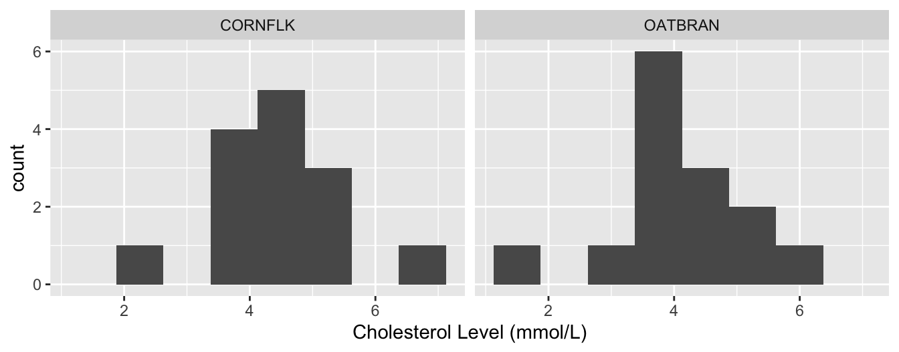
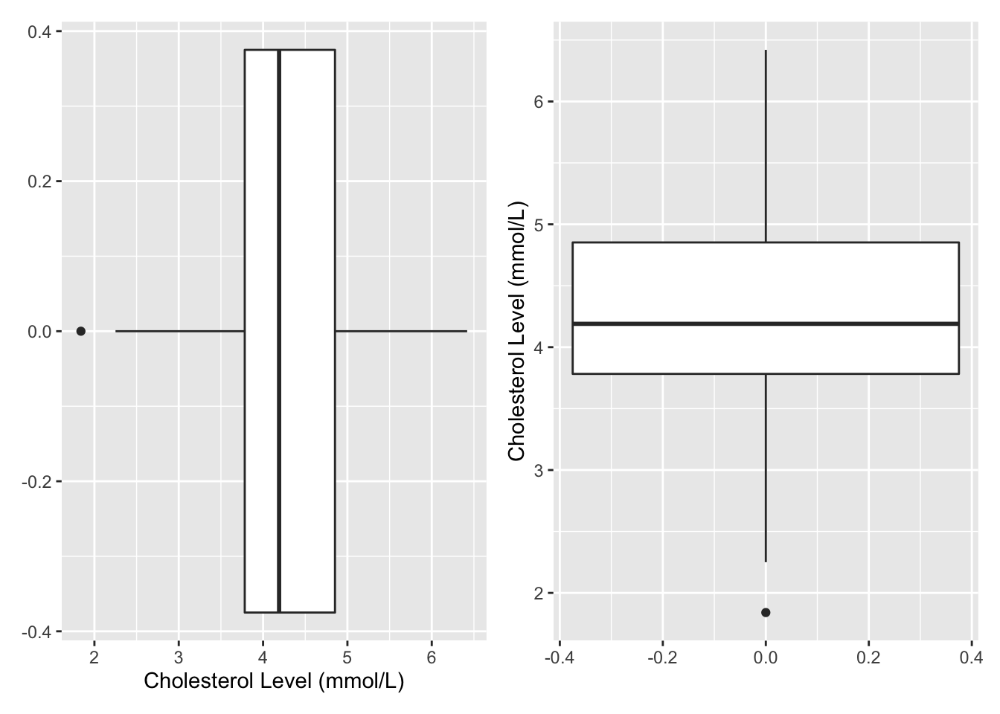
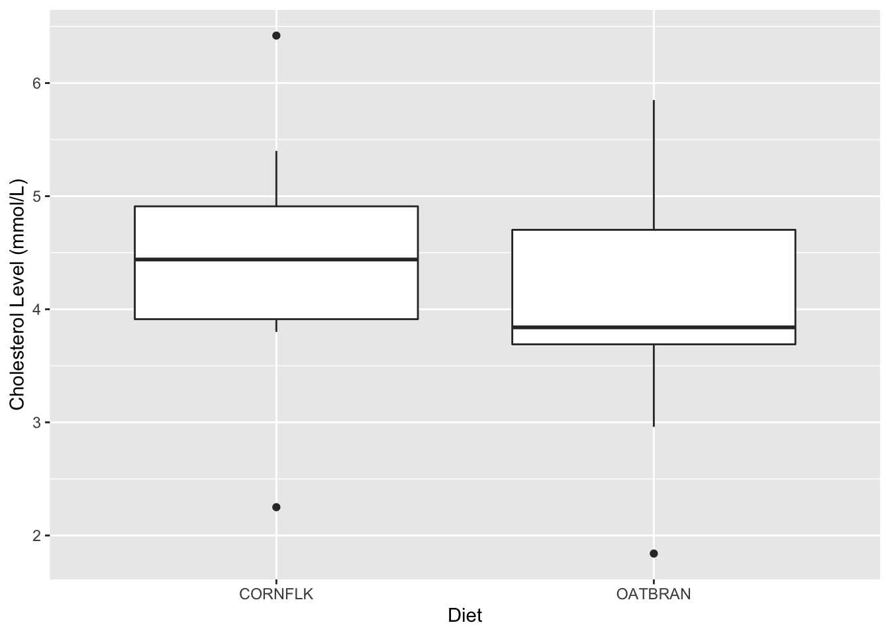
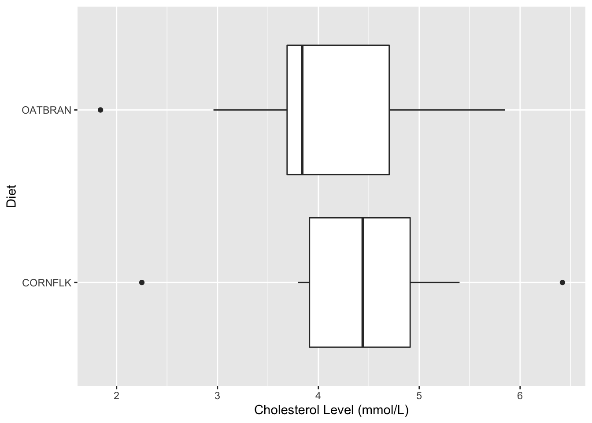
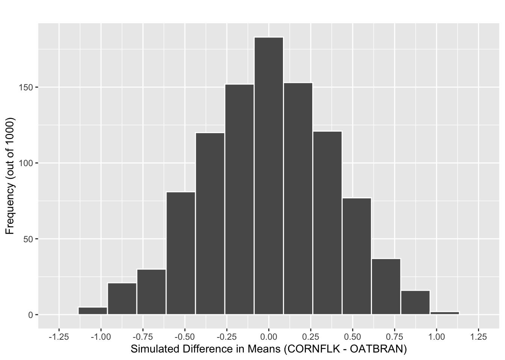
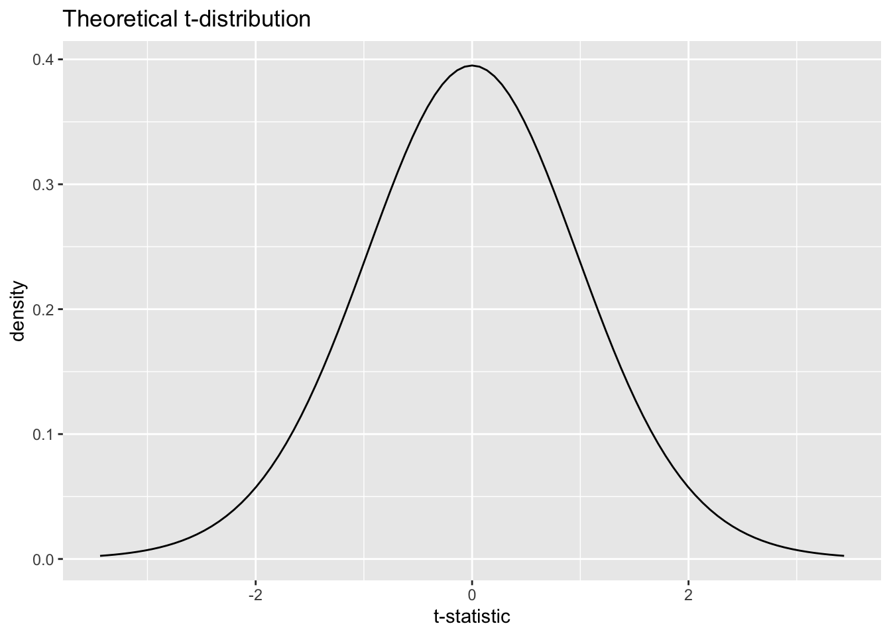

Activity 5: Cholesterol I
Hypothesis Testing for Two Independent Means
This week our focus is comparing the means of two groups. With linear regression we were able to compare the predicted mean response across different values of a continuous explanatory variable. This week, however, we are moving from a continuous explanatory variable to a categorical explanatory variable!
Learning Outcomes
Summarize and visualize quantitative data for two means.
Given a research question involving one categorical explanatory variable and one quantitative response variable, construct the null and alternative hypotheses in words and using appropriate statistical symbols.
Describe and perform a simulation-based hypothesis test for a difference in means.
Interpret and evaluate a p-value for a simulation-based hypothesis test for a difference in means.
Diet and Cholesterol
Researchers investigated whether eating corn flakes compared to oat bran had an effect on serum cholesterol levels. Twenty-eight (28) individuals were randomly assigned a diet that included either corn flakes (14 individuals) or oat bran (14 individuals). After two weeks, cholesterol levels (mmol/L) of the participant were recorded.
The first 6 rows of the data cholesterol_data_long appear below.
head(cholesterol_data_long)# A tibble: 6 × 2
Diet Cholesterol
<chr> <dbl>
1 CORNFLK 4.61
2 OATBRAN 3.84
3 CORNFLK 6.42
4 OATBRAN 5.57
5 CORNFLK 5.4
6 OATBRAN 5.85Comparing Two Groups
Let’s compare the cholesterol levels Cholesterol for participants on the corn flake (CORNFLK) diet and participants on the oat bran (OATBRAN) diet.
Setup Context
- What is the observational unit for this study?
- The two variables assessed in this study are the
DietandCholesterol. Identify the role for each variable (explanatory or response) and variable type (quantitative or categorical).
Explanatory:
Response:
- What is the population of interest for this study?
Exploratory Data Analysis (EDA)
Similar to summarizing the mean of all of the movies, we have two options to compare these two groups:
- Use summary statistics
- Use visualizations
Summary Statistics for Two Groups
Let’s start with summary statistics. Our familiar friend favstats() can help us compare summary statistics across different groups. Before when we used favstats() we only had one variable, but now we have two!
Now, we will use two variables as a “formula”, which looks like response ~ explanatory. So, the cholesterol levels of the participants is the response and the diet is the explanatory variable. So, our code looks like:
favstats(Cholesterol ~ Diet,
data = cholesterol_data_long)Use the output from the favstats() function to answer the following questions:
Diet min Q1 median Q3 max mean sd n missing
1 CORNFLK 2.25 3.9125 4.44 4.9100 6.42 4.443571 0.9688344 14 0
2 OATBRAN 1.84 3.6900 3.84 4.7025 5.85 4.080714 1.0569802 14 0- Report the observed mean cholesterol level for participants on the corn flake diet. Use appropriate notation with an informative subscript.
- Report the observed mean cholesterol level for participants on the oat bran diet. Use appropriate notation with an informative subscript.
- Calculate the difference in mean cholesterol level between participants on the corn flake diet and participants on the oat bran diet. (CORNFLK minus OATBRAN) Use appropriate notation with informative subscripts.
Visualizing Two Groups
Let’s refresh ourselves on the different ways to plot a numerical variable.
- What are the three types of plots used to plot a single quantitative variable?
- For each type of plot, how would you include a categorical variable in the plot?
Faceted Histograms
When we want to add a categorical variable (like Diet) to a histogram, we create separate plots for each level of the categorical variable. These separate plots are called facets. We are comparing the cholesterol levels for corn flake and oatbran diets, so we will have two facets, one per diet.
The code to make a faceted histogram looks like the following:
ggplot(data = cholesterol_data_long,
mapping = aes(x = Cholesterol)) +
geom_histogram(binwidth = 0.75) +
labs(x = "Cholesterol Level (mmol/L)") +
facet_wrap(~ Diet)Notice the last line is the only new part! That line creates a faceted plot (using facet_wrap()) and says to facet “by” (~) the Diet.
Let’s look at what this plot ends up looking like:

Side-by-Side Boxplots
Another way we can incorporate a categorical into our plots is to plot our boxplots for each group side-by-side. As opposed to faceting, these boxplots will be on the same plot. We only need to add one extra piece to our previous code: a categorical variable.
Before, we either plotted our one numerical variable horizontally (using x) or vertically (using y).

Now we need to plot two boxplots side-by-side. Similar to before, we can stack the plots horizontally or vertically.
Horizontal Stacking
ggplot(data = cholesterol_data_long,
mapping = aes(x = Diet, y = Cholesterol)) +
geom_boxplot() +
labs(x = "Diet",
y = "Cholesterol Level (mmol/L)")
- Why are the boxplots stacked side-by-side horizontally? What part of the
Rcode does this?
Vertical Stacking
ggplot(data = cholesterol_data_long,
mapping = aes(x = Cholesterol, y = Diet)) +
geom_boxplot() +
labs(x = "Cholesterol Level (mmol/L)",
y = "Diet")
- How was the previous code changed to stack the boxplots side-by-side vertically?
- Which orientation do you prefer?
Statistical Inference
Now that we have explored our data with summary statistics and visualizations, we want to use our data to draw inferences and make claims about the larger population.
Step 1: Ask a research question
Recall: Researchers investigated whether eating corn flakes compared to oat bran had an effect on serum cholesterol levels.
- In words, write out the parameter of interest in context of the study. Assign a symbol and use proper notation and be sure to define your subscripts. Use corn flakes minus oat bran as the order of subtraction.
- Write out the null and alternative hypotheses in words.
- Write out the null and alternative hypotheses with notation.
Step 2: Conduct a Hypothesis test
Recall in Question 6, we calculated the observed statistic of interest (difference in means) and assigned a symbol.
\[\bar{x}_{cornflake} - \bar{x}_{oatbran} = 0.2225\]
Remember that the null distribution is created based on the assumption the null hypothesis is true. In this study, the null hypothesis states that there is no association / relationship between the two variables. This means that the cholesterol levels observed in the data set would have been the same regardless of the diet and we would expect there to be a difference in means between the two groups of zero.
I’ve provided your group with a set of cards to use to simulate a sample that could have happened if the null was true.
- How many cards will we start with?
- What will we write on each card?
- Next, we need to generate a data set that could have happened if the null hypothesis was true. How do we do this?
- Once we have generated our new data set that could have happened if the null was true, what value do we calculate? Hint: What statistic are we calculating from the data?
- Create one simulation using the cards provided. Is your simulated statistic closer to the null value of zero than the difference in means calculated from the sample? Explain why this makes sense.
- Once we create a null distribution of 1000 simulations, at what value do you expect the distribution to be centered? Explain your reasoning.
Carrying out the simulation in R
We will use the infer package (again) to make our simulated null distribution. The process we used for this situation will look very similar to before, since all we are changing is the statistic we calculate!
- Fill in the blanks for the code below. You might want to look back at your
Activity 4: Diving Penguinsfor some help!
cholesterol_data_long %>%
specify(response = _____________, explanatory = _____________) %>%
hypothesise(null = _____________) %>%
generate(reps = _____________, type = _____________) %>%
calculate(stat = "diff in means",
order = c("CORNFLK", "OATBRAN")
)Last time we use a "slope" statistic, so we didn’t need to specify the order of subtraction. But now, with a difference in means we need to specify which group should come first and which should come second.
- Draw a line where the observed statistic falls on the simulated null distribution below. Shade the area that you will use to calculate the p-value.

- Based off the simulation, what is the p-value for your hypothesis test. Based off of this p-value, write a conclusion to the hypothesis test.
- Can we say diet causes changes in cholesterol levels? Explain.
Using theoretical methods instead…
What we just did used simulation to approximate what the sampling distribution of \(\bar{x}_1-\bar{x}_2\) would look like if the null was true (we call this the Null Distribution). However, we don’t necessarily need to use simulation to approximate this distribution!
The sampling distribution for \(\bar{x}_1-\bar{x}_2\) can be modeled using a \(t\)-distribution, when certain conditions are not violated. These conditions are:
Independence: The sample’s observations are independent
Normality: Each sample should be approximately normal or have a large sample size. For each sample:
\(n < 30\): If the sample size \(n\) is less than 30 and there are no clear outliers in the data, then we typically assume the data come from a population whose distribution is nearly normal.
\(n \ge 30\): If the sample size \(n\) is at least 30 and there are no particularly extreme outliers, then we typically assume the sampling distribution of \(\bar{x}\) is nearly normal, even if the underlying distribution of individual observations is not.
If these conditions seem reasonable, then we can use a \(t\)-distribution with the smaller of \(n_1 - 1\) and \(n_2 - 1\) degrees of freedom.
Previously we drew our line on the null distribution at our observed difference in means. However, if we use a \(t\)-distribution, we need to draw our line at the standardized statistic (\(t\)-statistic) instead of the observed difference in means. To calculate a \(t\)-statistic we use the following formula:
\[ T = \frac{\text{Point Estimate} - \text{Null Value}}{\text{SE of the Point Estimate}}=\frac{(\bar{x}_1 - \bar{x}_2) - 0}{\sqrt{\frac{s^2}{n_1} + \frac{s^2}{n_2}}} \]
Diet min Q1 median Q3 max mean sd n missing
1 CORNFLK 2.25 3.9125 4.44 4.9100 6.42 4.443571 0.9688344 14 0
2 OATBRAN 1.84 3.6900 3.84 4.7025 5.85 4.080714 1.0569802 14 0- Using the above formula and the summary statistics (we saw these earlier as well), calculate the \(t\)-statistic for these data.
- Using the \(t\)-distribution below, find your calculated \(t\)-statistic. Shade the area that you will use to calculate the p-value.

In statistics, there are calculus methods used to find the area of this shaded region. Think of this entire curve equaling 100%; the pt() function will help us find this area.
q: the value of the t-statistic you want to shade from (the calculated standardized statistic)df: degrees of freedom telling the specific shape of the t-distributionlower.tail = Ftells the function to shade to the right instead of the left
We then multiply by 2 to “shade” the other side for our two-sided test.
2 * pt(q = 0.953893, df = 13, lower.tail = F)[1] 0.3575392- Indicate the p-value for your hypothesis test. Is this similar to the p-value you obtained using simulation? Would your decision/conclusion change?
Remember the t_test() function when we were comparing one mean to a “status quo” value? Similarly, we can use this to use theory based methods to test our hypotheses and compare the difference in means between our two groups.
responseis the response variableexplanatoryis the explanatory variablealternativestates the direction of the alternative hypothesis ("two-sided","greater", or"less")muis the null hypothesized value for the statistic of interestordergroup 1 - group 2 (specified asc("group 1", "group 2"))
t_test(cholesterol_data_long,
response = Cholesterol,
explanatory = Diet,
alternative = "two-sided",
mu = 0,
order = c("CORNFLK", "OATBRAN"),
conf_int = FALSE)# A tibble: 1 × 5
statistic t_df p_value alternative estimate
<dbl> <dbl> <dbl> <chr> <dbl>
1 0.947 25.8 0.352 two.sided 0.363- Where have we seen approximately the statistic and p_value before? How about the estimate?
Take-home messages
To create one simulated sample on the null distribution for a difference in sample means, you carry out the following steps:
- label cards with the values from the observed sample
- tear the explanatory \(x\) and response \(y\) labels/values apart
- shuffle the cards and make new pairs of explanatory \(x\) and response \(y\) labels/values
- calculate and plot the difference in means between the “new/permuted” groups
If it is not unreasonable to assume that the observations from each group come from a population with a normal distribution, then the \(t\)-distribution can be used (instead of a simulated null distribution) to approximate the sampling distribution.
- The \(t\)-distribution uses the smaller of \(n_1 - 1\) and \(n_2 - 1\) degrees of freedom